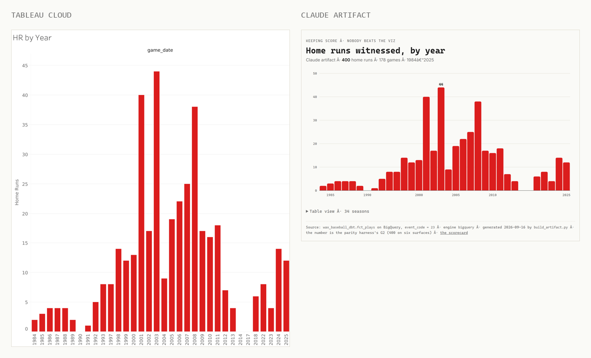

The game notes. Read these before first pitch.
Same 178 games. Same seven questions. Same way of checking every answer. Here's the setup, so nothing in the lineup has to stop and explain it.

The whole contract is live and browsable — models, tests, and the full lineage graph.
178 major-league games I sat through, 1984 to 2025. Every one joins to Retrosheet's play-by-play on one clean key. No fuzzy matching. That one join is why any of this works.
On top of the games sit seven questions a fan would ask. How many games. How many home runs. Who I went with. How the Yankees do when I'm there. Each one is written down once, as a definition, and every tool has to answer through it. No tool gets to write its own.
The lineup on the front page takes those questions through one tool at a time and keeps every trace. Read together, it's the box score: what the tools actually did, kept by somebody who was there.
Every tool in the game, one card-back each: where it bats, what it is, what it did when it got up.
Bats in: batting 2nd
What it is. SQL that runs inside the warehouse and turns raw tables into tested, documented ones. Its semantic layer is where each metric gets written once.
In this game. 16 models, 104 tests green, 7 governed metrics. Every other engine is measured against it.
Bats in: leading off · batting 2nd · batting 5th · batting 8th
What it is. Google's warehouse. Where the 178 games and their 14,406 plays live, and where the whole thing started as a spreadsheet upload.
In this game. Its own agent narrated in plain English and handed over a job id you can look up. 9.5 seconds, 0 bytes billed.
Bats in: leading off · batting 3rd
What it is. Classic Tableau, hosted. You know it. This time an agent wrote the workbook as XML and published it through the Tableau MCP server.
In this game. 34 bars, 400 home runs, no browser open. 7 for 7 through the query service.
Bats in: batting 3rd · batting 5th
Also played: SUPERSTORE 007
What it is. Tableau on Salesforce's platform. It reads the Data 360 semantic model directly, and Tableau Agent answers questions over it.
In this game. First answer: zero home runs, confidently. After the model learned who “I” is: 4 for 4.
Bats in: batting 3rd · batting cleanup · batting 6th
Also played: SUPERSTORE FORTY-NINE · SUPERSTORE 007
What it is. Salesforce's data layer. It reads Snowflake and Databricks where they sit, copies from Google Cloud, and holds the semantic model Salesforce's agents stand on.
In this game. 7 for 7 through the semantic engine. Said 281 Hall of Famers before it said 44.
Bats in: batting cleanup · batting 5th
Also played: SUPERSTORE FORTY-NINE · SUPERSTORE 007
What it is. Salesforce's agent platform. Baseball Scout is written in Agent Script: the agent as code, not clicks.
In this game. 3 golden cases, 3 for 3, three runs straight. Also committed the 9 and the 0%.
Bats in: batting 5th · batting 6th · batting 7th
What it is. A cloud warehouse. The seven metrics live in a semantic view, and Cortex is the agent that answers from it.
In this game. 7 for 7. The agent got to 400 by rewriting the home run definition by hand instead of asking for it by name.
Bats in: batting 5th · batting 6th · batting 7th
Also played: SUPERSTORE FORTY-NINE
What it is. A lakehouse. The metrics live in Unity Catalog metric views. Genie is its agent, AI/BI draws its charts.
In this game. 7 for 7. Genie asked for the measure by name, then volunteered its own assumption.
Bats in: batting 5th
What it is. Anthropic's agent SDK. This agent has no SQL tool. The only thing it can do with your data is ask for a metric by name.
In this game. 4 tool calls to the right answer. A twin with raw SQL needed 9. $0.18 for the turn.
Bats in: batting 7th
What it is. Python apps that live inside Snowflake. The chart reads the same semantic view the agent does.
In this game. The same 400 by year, deployed from the command line.
Bats in: batting 2nd
What it is. Google's free BI tool, reading the same BigQuery view.
In this game. The one chart drawn by hand. No authoring API, and the page says so.
Scorekeepers make calls. Hit or error, earned or unearned: the scorer rules, and nobody else gets to. Every call on this card is mine.
Claude Code had the seat next to me: the models, the harness, the workbook XML, the agents, this site. The Viz is on the mic. Eric B. is on the cut.
The card is kept in three layers — source, analysis, presentation — and the presentation is regenerated, never patched. The one time I broke that rule is its own lesson.
Every wrong answer in the run, who made it, and where it bats.
| It said | The truth | Who | What kind | Where it bats |
|---|---|---|---|---|
| “9 games at Yankee Stadium” | 100 | Agentforce | Grounding. Never called its tool. | batting cleanup |
| “0% Yankees games” | 80.3% | Agentforce | Data logic. “Yankees” isn’t “New York Yankees.” | batting cleanup |
| “No highlights found” | it never looked | Agentforce | Instruction. Skipped the step it was told it must take. | batting cleanup |
| “58 games in 27 stadiums” | 178 in 22 | Agentforce | Grounding. Invented, no tool call. Still open. | batting cleanup |
| “0 home runs” | 400 | Tableau Agent | Context. Decided “I” meant the logged-in user. | batting 3rd |
| “21 different stadiums” | the tool returned 22 | Agentforce | Counting. Grounded, then miscounted. | batting 5th |
| “281 Hall of Famers” | 44 | Data 360 | Path. The join never ran through my games. | batting 6th |
| “35 Hall of Famers” | 44 | Data 360 | Path. Batters only; pitchers never entered. | batting 6th |
| “24” | 35 | Data 360, Google Cloud leg | Load. Kept one Hall of Fame ballot per player. | batting 6th |
| “Couldn't query at all” | 7 for 7, once fixed | Snowflake Cortex | Validation. The agent path rejected column names the SQL path accepted. | batting 7th |
10 errors. 9 fixed, 1 still open. None of them fixed by a better model.
Seven questions, one definition each, and the answer dbt gives. A harness asks every question of six surfaces — dbt on BigQuery, Snowflake, Databricks, Data 360, Tableau Next, and Data 360 again over Google Cloud — and diffs every answer against dbt.
| Question | Answer | Matched |
|---|---|---|
| Games, and in how many ballparks | 178 in 22 | 6 of 6 |
| Runs witnessed | 1,706 | 6 of 6 |
| Games by year | 34 seasons; peaks of 17 in 2001 and 2003 | 6 of 6 |
| Home runs witnessed | 400 | 6 of 6 |
| Who I went with, top five | Melissa 57, Bergan 27, Al 26, solo 16, Poppa 14 | 6 of 6 |
| The Yankees when I'm there | 90–53 in 143 decided | 6 of 6 |
| Hall of Famers seen | 44 | 6 of 6 |
42 of 42, 2026-09-05. The receipts are generated by the harness, not typed.
When an agent hands you a number, go to the tape. Three things to check, in order.
The lineup scores six agents on exactly this. Some show all three. None show everything.
Poppa kept score at the ballpark with a pencil and a card, and taught me the marks — the little diamond you fill in when someone reaches, 5-3 for a groundout to third. He's on the card fourteen times. My first game is 1984, and the scorecard from it still reads clean. The hand-kept cards, his and mine, are the seed. Everything on this site is what happens when you point the current tools at a shoebox of them and refuse to let any of them invent a play.